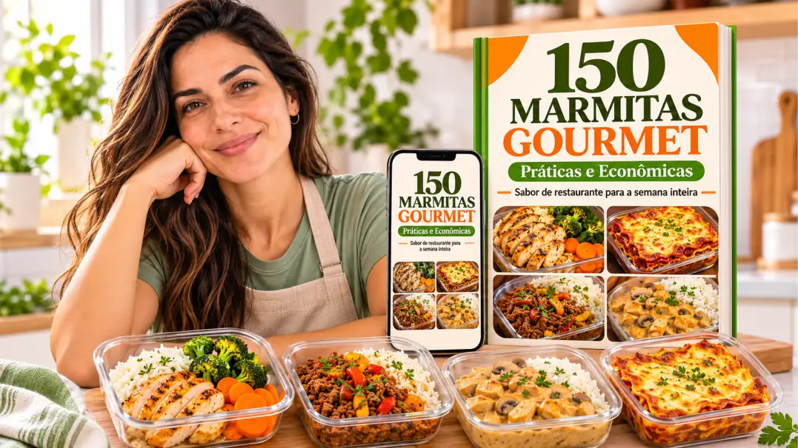
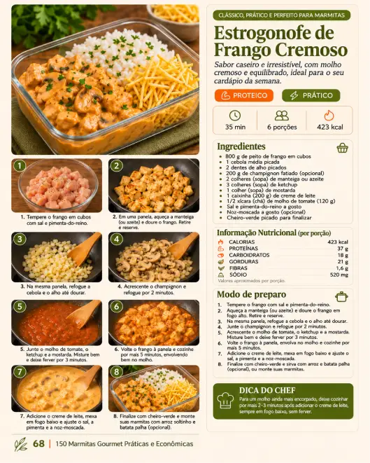
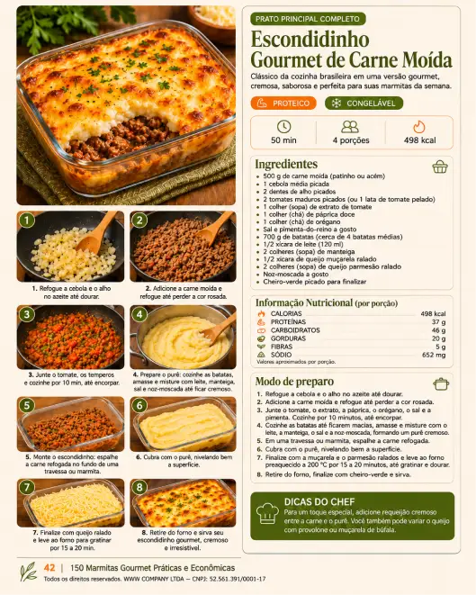
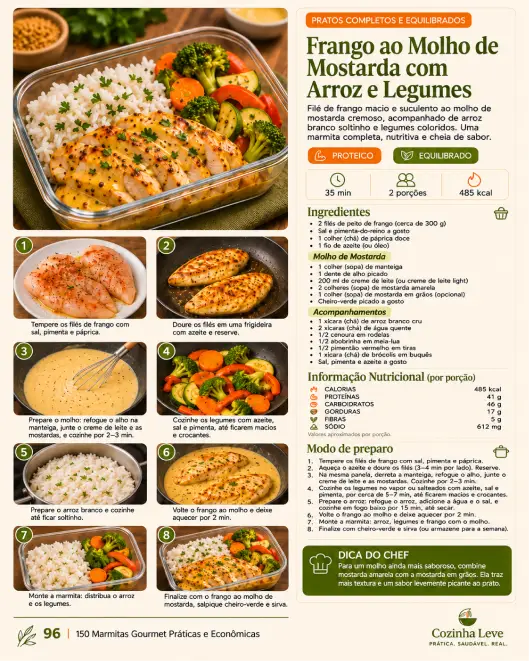
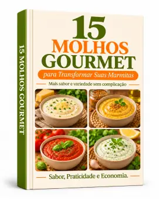
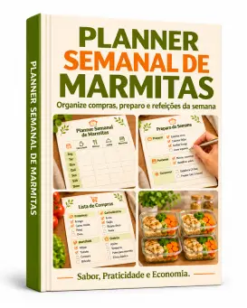
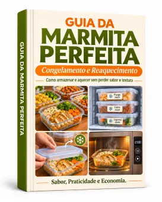
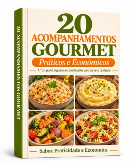

Marmitas com Sabor de Restaurante para a Semana Inteira, Gastando Muito Menos que no Delivery!
150 receitas deliciosas, fáceis e econômicas para preparar em casa, organizar sua semana e nunca mais enjoar das mesmas marmitas.

De R$ 97,00
por apenas
R$ 10,00
QUERO MINHAS 150 MARMITAS GOURMET150 Marmitas Gourmet sem cair na repetição
Prepare as refeições de vários dias de uma vez
Ingredientes baratos e fáceis de encontrar
Passo a passo simples e ilustrado
Dicas de montagem, congelamento e reaquecimento
Marmitas cremosas, suculentas e cheias de sabor
Opções para toda a família
Acesso no celular ou impresso
Receitas com cara de restaurante, feitas com ingredientes comuns de mercado!



ARRASTE PARA VER MAIS
Quem prepara, não quer mais voltar para a marmita sem graça!
Veja os pratos que podem fazer parte da sua rotina com as receitas do guia.
Inserir fotos reais das receitas preparadas, identificadas como demonstrações do produto, ou fotos enviadas por clientes com autorização.
QUERO MINHAS 150 MARMITASGasta demais com delivery e quer levar refeições gostosas para o trabalho sem deixar uma fortuna no iFood.
Está cansada de comer sempre as mesmas marmitas, com frango seco, arroz sem graça e pouca variedade.
Quer organizar as refeições da semana, preparando várias porções de uma vez e evitando cozinhar todos os dias.
Adora comida com sabor de restaurante, mas quer preparar pratos parecidos usando ingredientes comuns e econômicos.
Não tem muita experiência na cozinha e precisa de receitas explicadas de um jeito fácil, com medidas e passo a passo visual.
Quer que a marmita continue gostosa na hora de comer, aprendendo a combinar os ingredientes e a reaquecer cada preparação corretamente.
Adquira hoje e garanta esses materiais de apoio essenciais sem pagar nada a mais

Aprenda a preparar molhos cremosos, temperados e fáceis, que dão mais sabor às proteínas e ajudam a variar as marmitas sem complicação.

Planeje as combinações da semana, organize suas compras e saiba quais marmitas preparar e armazenar.
Descubra alternativas para carnes, queijos, molhos, acompanhamentos e temperos, aproveitando melhor os ingredientes disponíveis.

Orientações para montar porções, escolher recipientes, separar acompanhamentos e conservar cada tipo de preparação com segurança.

Receitas para combinar com carnes, frango, massas e molhos, deixando o cardápio muito mais variado sem precisar gastar muito.
Selecione o plano ideal para sua rotina e comece a preparar marmitas deliciosas sem depender do delivery todos os dias!
GARANTIA DE SATISFAÇÃO TOTAL
SEU RISCO É ZERO — 7 DIAS DE GARANTIA INCONDICIONAL
Queremos que você tenha tranquilidade para conhecer o material e começar a preparar suas marmitas.
Por isso, você tem 7 dias completos para explorar as receitas, conferir o passo a passo e conhecer as combinações.
Se não gostar do material, não achar as receitas simples ou se arrepender da compra por qualquer motivo, basta solicitar o cancelamento dentro do prazo para receber 100% do seu dinheiro de volta.
SEM PERGUNTAS · SEM ENROLAÇÃO · SEM BUROCRACIA
Veja o que quem prepara marmitas gourmet pode dizer sobre a experiência
Textos ilustrativos para a seção de avaliações. Substituir por depoimentos autênticos de compradores antes de publicar.
"Eu estava cansada de levar arroz com frango seco todo dia. Comecei a variar os molhos e fazer escondidinho, estrogonofe e frango cremoso. Agora minhas marmitas parecem almoço de restaurante!"
"Trabalho o dia inteiro e não tenho paciência pra cozinhar todos os dias. Gostei da ideia de deixar as marmitas organizadas e variar os acompanhamentos. Facilita demais na correria!"
"Eu gastava muito pedindo almoço porque enjoava da comida que levava. As combinações de carne moída com purê e macarrão cremoso são exatamente o tipo de receita que eu gosto de fazer."
"Aqui em casa todo mundo gosta de comida bem temperada. O que mais gostei foram as opções com molho e queijo. Dá pra preparar comida caprichada sem precisar comprar ingredientes caros."
Ainda não garantiu sua oferta?
Chega de gastar com delivery ou levar marmita sem graça para o trabalho!
Tenha 150 ideias para preparar refeições gostosas, econômicas e variadas, com ingredientes simples que você encontra em qualquer mercado.
QUERO MINHAS 150 MARMITAS GOURMET⚡ Acesso Imediato · 🔒 Compra Segura · 🛡️ Garantia de 7 Dias